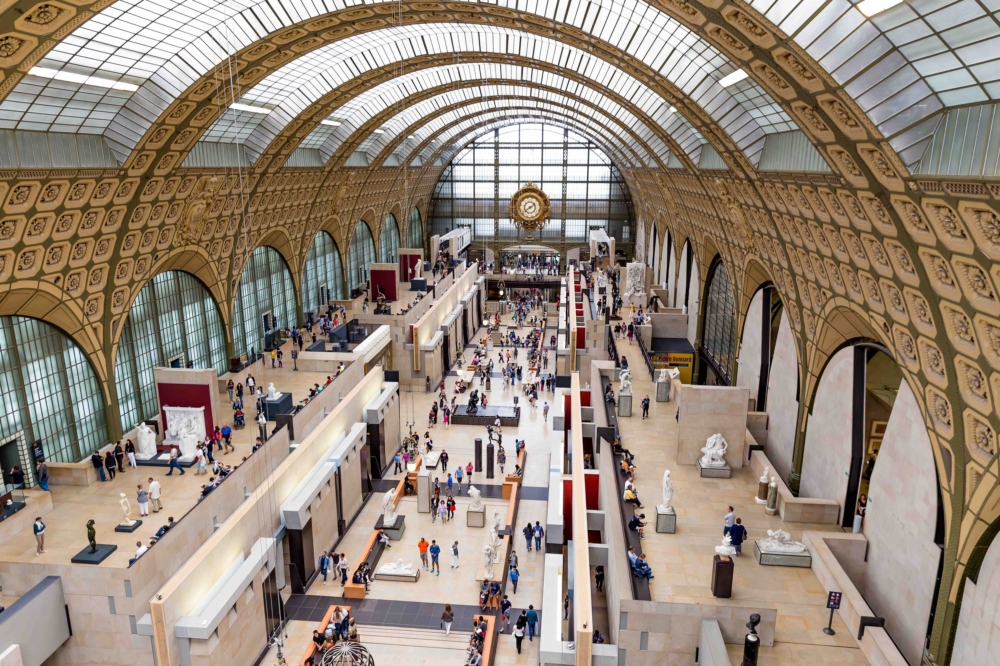
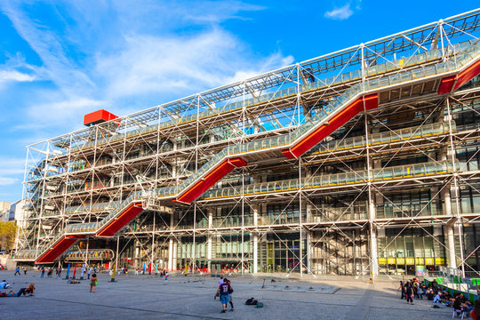
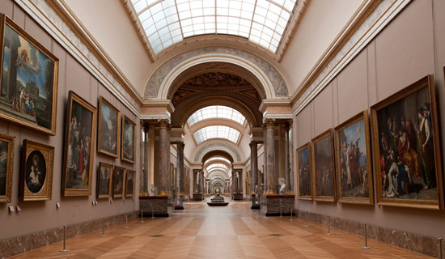

Must-Visit Museums

Musée du Louvre, Paris

Musée d'Orsay, Paris

Centre Pompidou, Paris

Musée Matisse, Nice

France is one of the world's great repositories of art, with a network of world-class museums that spans from the Seine to the Mediterranean. The country's commitment to preserving and sharing its cultural heritage means that many national museums offer free admission on the first Sunday of each month, and many are free year-round for visitors under 26 from EU countries. Whether you are drawn to ancient antiquities, Renaissance masterpieces, Impressionist landscapes, or cutting-edge contemporary art, France's museums have something extraordinary to offer.


The world's largest art museum, home to over 35,000 works including the Mona Lisa, Venus de Milo, and Winged Victory. Plan at least a full day — there is truly no end to what can be discovered within its walls.
Housed in a stunning converted Beaux-Arts railway station on the Seine, the Orsay holds the world's largest collection of Impressionist and Post-Impressionist masterpieces, including works by Monet, Renoir, Degas, and Van Gogh.
An architectural landmark in its own right, the inside-out Pompidou Centre in Paris's Marais district houses Europe's largest museum of modern and contemporary art, with works by Kandinsky, Picasso, and many others.

More than a palace, Versailles is an immense museum of French royal history and decorative arts. Its State Apartments, Royal Chapel, and Hall of Mirrors contain an unparalleled collection of historical furnishings and paintings.
Discover practical tips for visiting France's top museums and galleries.
See Travel Tips →